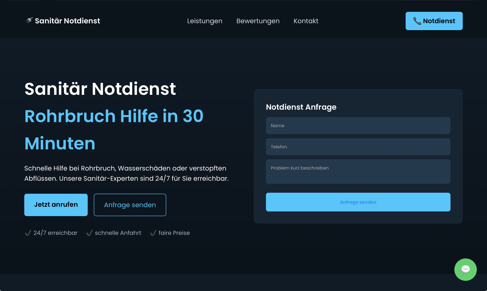
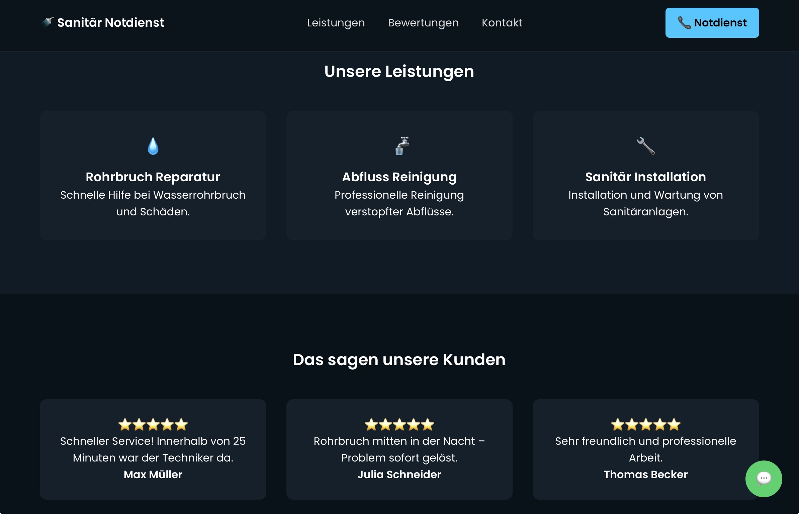
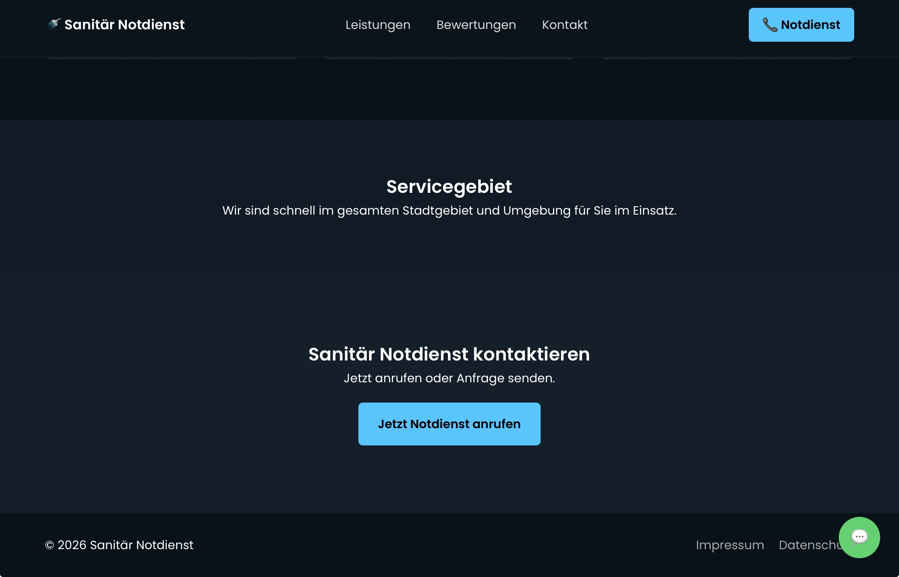

Professionelle Websites für Installateur- und Sanitärbetriebe. Perfekt geeignet um bei Rohrbruch oder Notfällen schnell neue Kunden zu gewinnen.
So könnte eine moderne Website für Installateur- und Sanitärbetriebe aussehen.



Alle wichtigen Funktionen für Notdienst-Betriebe.
Kunden können sofort telefonisch Hilfe anfordern.
Schnelle Anfragen direkt über WhatsApp.
Vertrauen durch echte Bewertungen.
Der Standort des Betriebs wird direkt angezeigt.
Wir erstellen moderne Websites für Sanitär- und Installateurbetriebe.
Perfekt geeignet für: